Unified live chat
Twitch and YouTube chat side by side, with EventSub alerts for subs, bits and raids as they happen.
Two tools, one stream setup
StreamMod keeps your chat, Discord and VLC playback in one panel. Cuelist keeps your OBS overlay honest — now-playing, marathon timers, and alerts.
A lightweight desktop dashboard for moderating Twitch (and YouTube) live chats, watching a Discord mod channel, and controlling VLC playback — all from one panel.
v1.0.19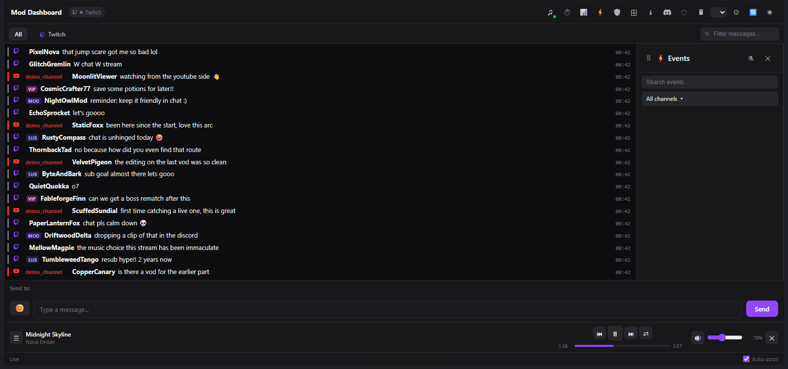
Twitch and YouTube chat side by side, with EventSub alerts for subs, bits and raids as they happen.
A mod-channel panel that reads and sends Discord messages, and relays every ban, timeout and warn back to your team.
Control local media straight from the dashboard, browse the full playlist, with chat-driven song requests built in.
Warn, timeout or ban, and toggle slow / sub-only / emote-only / followers-only mode without leaving the panel.
Held messages land in a review queue with one-tap approve or deny — nothing gets buried in chat.
Drag and resize every panel, then save the arrangement as a Profile you can switch back to anytime.
Redeem- or command-triggered OBS overlay alerts, plus automations like auto-announcing when a channel goes live.
15+ settings tabs — Twitch, YouTube, Discord, Moderation, VLC, Marathon Timer, Automations and more — all in one panel.
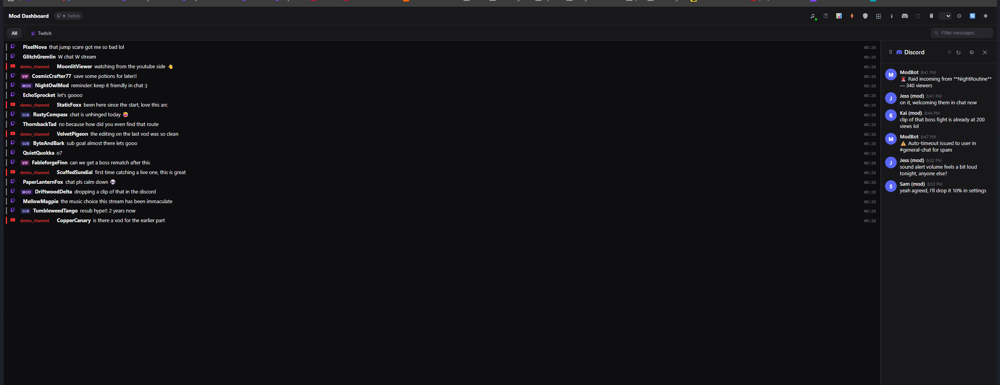
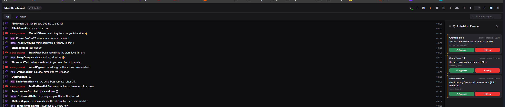
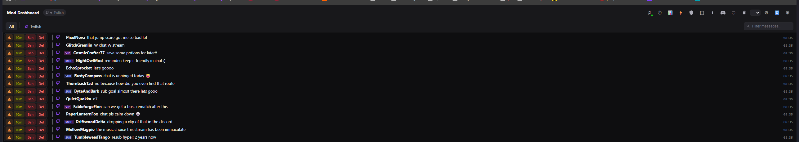
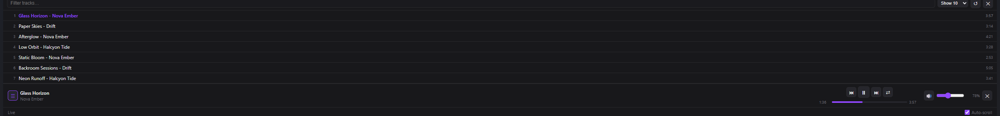
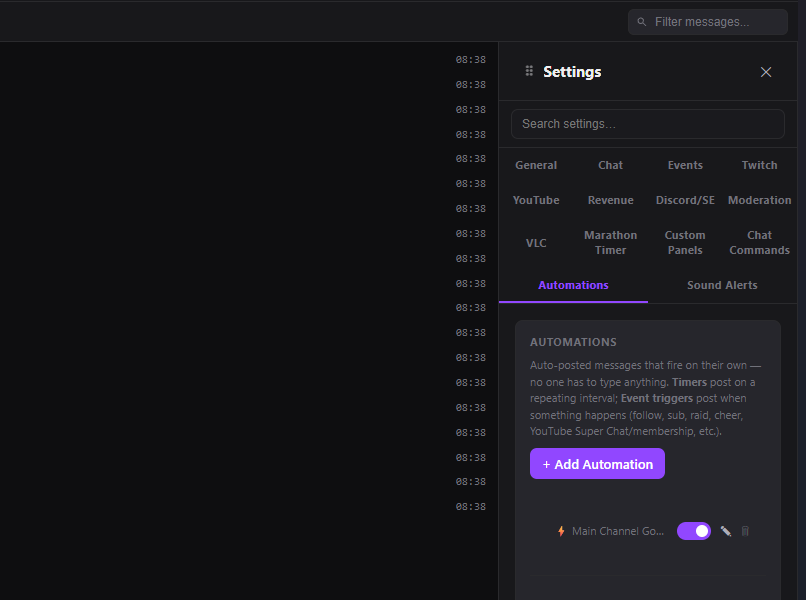
An OBS overlay for now-playing, marathon streams, and alerts — configured entirely from your browser, no code required.
v0.2.1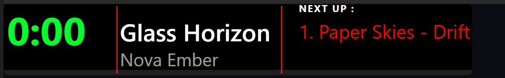
Shows what's playing in VLC or Spotify, with VLC taking priority whenever it's active.
A rotating "what's next" list keeps your overlay useful even between tracks.
Your Twitch title updates itself the moment a new video starts — no manual editing mid-stream.
Built for 30+ day unattended marathon streams, with event history that survives restarts.
A dedicated overlay for subs, bits and donations, styled to match the rest of your scene.
Everything is configured through a browser settings page — never touch a config file.
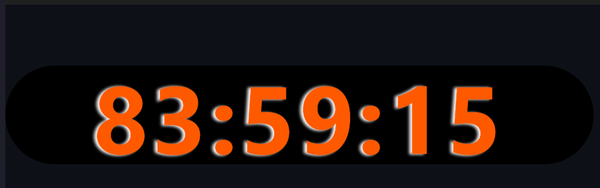
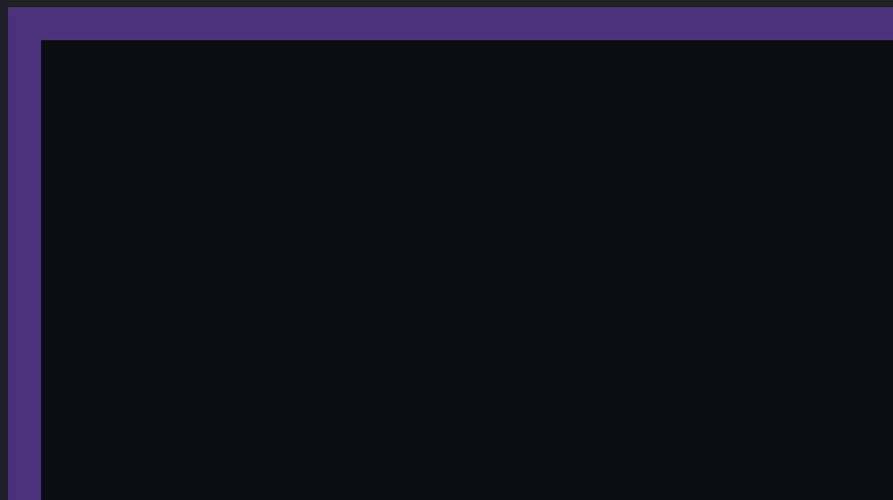
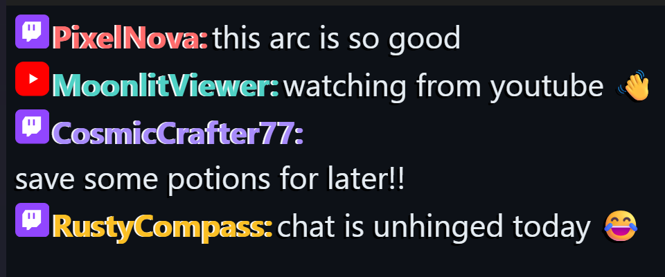
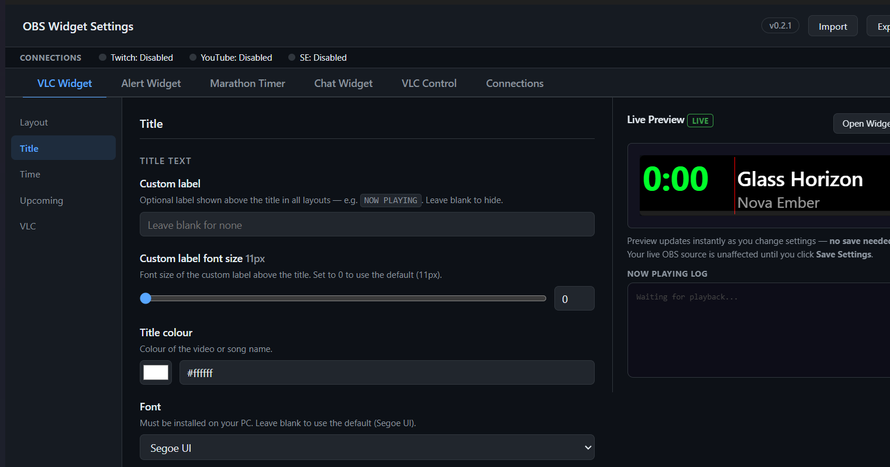